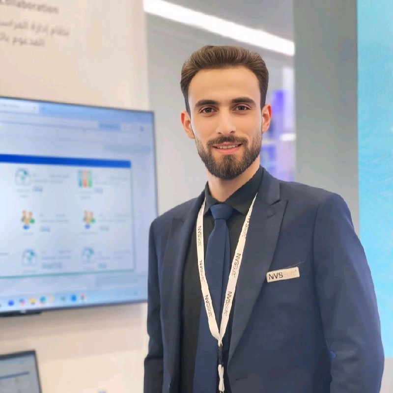

Senior-leaning AI Engineer with ~4 years of combined professional experience delivering LLM-powered systems, autonomous AI agents, and production-grade services end-to-end — from data preparation and fine-tuning (PEFT/LoRA, RLHF) to optimization, ONNX export, and cloud deployment on AWS, GCP, and IIS.

I’m a Senior-leaning AI / Software Engineer with experience spanning AI/ML engineering, data science, and full-stack development. I design and ship LLM-powered applications, autonomous AI agents, and production-grade services — from data and training pipelines to APIs, front ends, and CI/CD.
My work bridges Python ML ecosystems with ASP.NET Core back ends, React UIs, and cloud infrastructure (AWS, GCP, IIS). I’m particularly focused on agentic patterns, retrieval workflows, quantization and optimization, and robust deployment of AI systems in production.
Python, C#, JavaScript (React, Node.js), SQL, MATLAB
TensorFlow, PyTorch, Keras, scikit-learn, Pandas, NumPy; computer vision & NLP pipelines.
Hugging Face Transformers, LangChain, RAG, tool-calling, planner/executor patterns, vector memory, human-in-the-loop.
Quantization, ONNX, Docker, REST APIs, ASP.NET Core, CI/CD, observability, IIS, PythonAnywhere, Heroku.
n8n, Elsa Workflows, scheduled jobs, retries, event-driven flows, approvals and HIL.
Analytical thinking, problem solving, collaboration, communication, adaptability, time management, research, attention to detail, troubleshooting.
Reality AI Lab · Sep 2025 – Oct 2025
moe/ components (classifier, gating, templates, LLM client)
with YAML-based configs and rich logging.
Personal · Mar 2025 – May 2025
SELECT *) and multi-chart analytics to accelerate
ad-hoc reporting and reduce syntax errors.
Freelancer.com · Oct 2024 – Dec 2024
Personal / Freelance · Jun 2024 – Jul 2024
Feel free to reach out to discuss AI projects, collaboration opportunities, or just to connect!
Riyadh, Saudi Arabia
ahmad.saleh.faour@gmail.com
+966-596824729
linkedin.com/in/ahmad-faour
github.com/ahmadfaour9